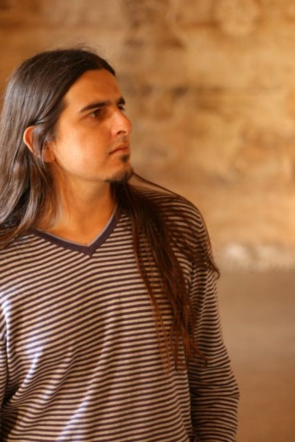

Born in Porto in 1986, he has been teaching at Curso de Música Silva Monteiro since 2009. He currently teaches Composition Analysis and Technique and Guitar Orchestra. He has a Bachelor's Degree in Composition from ESMAE (2013) and in Economics from FEP - UP (2009). He also has a Master's Degree in Composition and Musical Theory from ESMAE and is now studying for his Master's Degree in Music Teaching at the UCP School of the Arts in Porto. In 2009, he completed 8th level Guitar at Porto Music Conservatory (under Professor Paulo Peres, having studied Composition with Professor Fernando Lapa).
Since 2010, he has been a member of Factor E! and the Digitópia Collective, from the Casa da Música Educational Services, where he works in workshop design and leadership, software development, project artistic and/or educational direction (working regularly with the resident groups in Casa da Música) and performance in the electronic music area. Since 2016, he has also been a member of LabJázzica - Matosinhos Jazz Orchestra Educational Service, and Analysis and Compositions Techniques teacher at the Bragança Conservatory of Music and Dance.
In 2016, he founded Instant Ensemble - a Real Time Composition Ensemble in Porto, of which he is the artistic director. This ensemble specialises in real-time creation (during the actual performance) and includes musicians from different areas, such as classical music, rock, jazz and electronic music. At the same time, he has been working regularly as a composer, particularly in the electronic music area and writing for orchestra and cinema.